Objectives
In this Exercise you will learn how to:
- Create an Edge Data Collector (EDC) Integration in Monitor
- Add an endpoint to the Integration
- Add devices to the Integration
Before you begin:
This Exercise requires that you have:
- completed the pre-requisites required for all labs
- completed the previous exercises
A good starting point is to get the IP address of the industrial devices you need to collect the data from - in this case the machine the Modbus simulator is running on. The way to get it depends on the OS:
- Windows: Open a CMD window and execute
ipconfig - MacOS: Open a terminal and execute
ifconfig -en0 - Linux: Open a terminal and execute
hostname -I
I was running the simulator on my local network on a machine with the IP address: 192.168.1.42.
Create a new Edge Data Collector (EDC) Integration in Monitor
Navigate to the Configure devices in Edge Data Collector from the Monitor Home page: 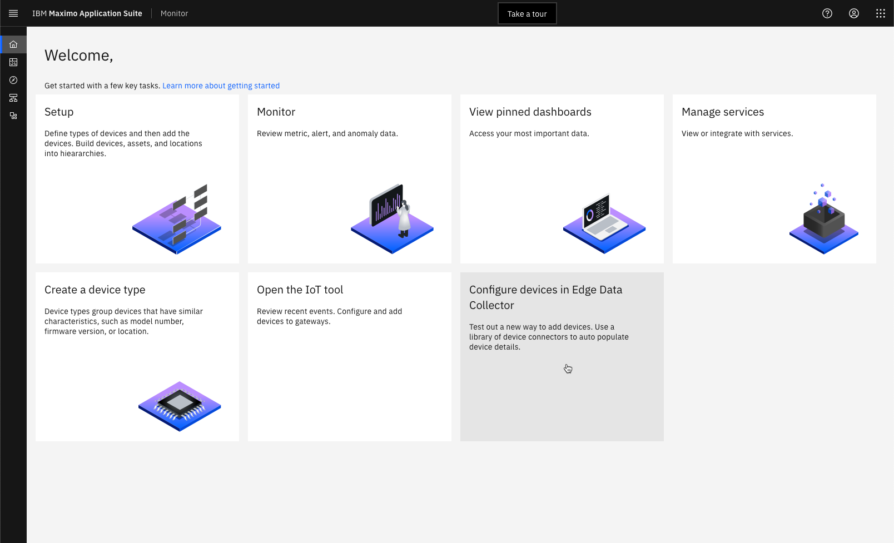
Click on Add integration:
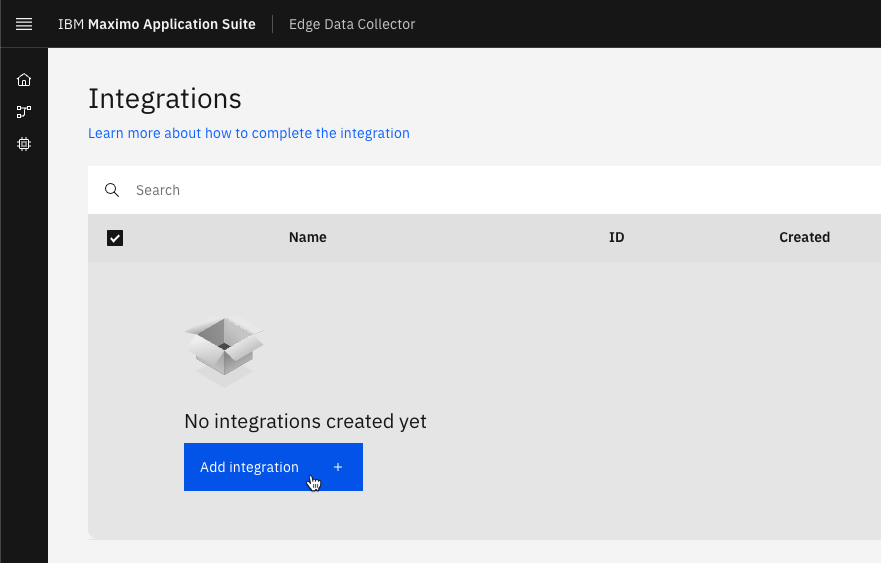
Give it a name: 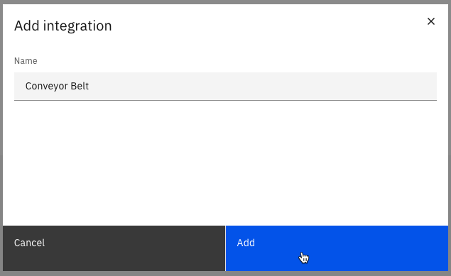
Add an endpoint
The endpoint of the Integration configuration is where the gateway connection credentials we defined previously has to be added. This is where the EDC edge will send the unified data to once collected from the industrial devices.
Click on Add endpoint and the select Maximo:
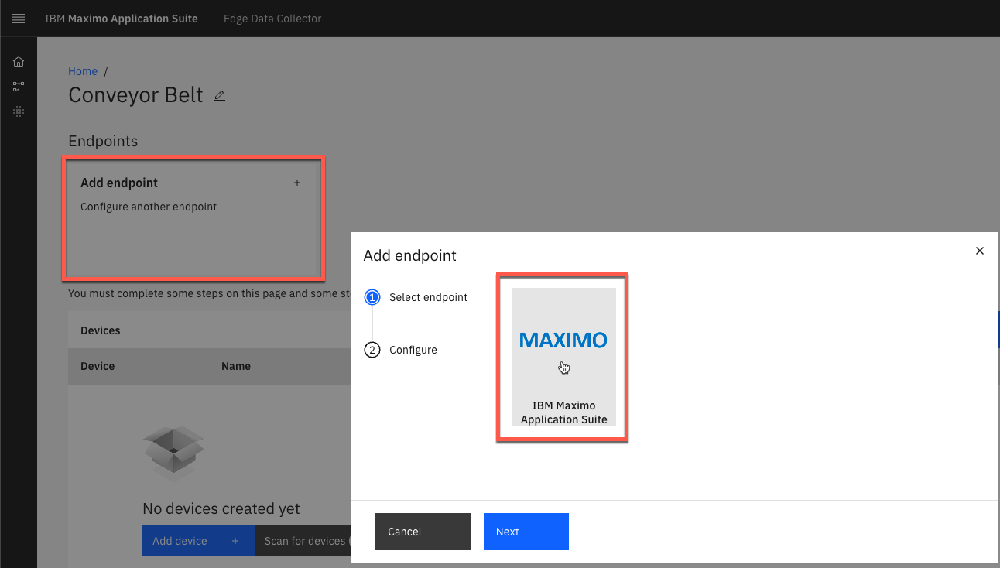
Add the credentials you saved in the previous exercise and click Finish:
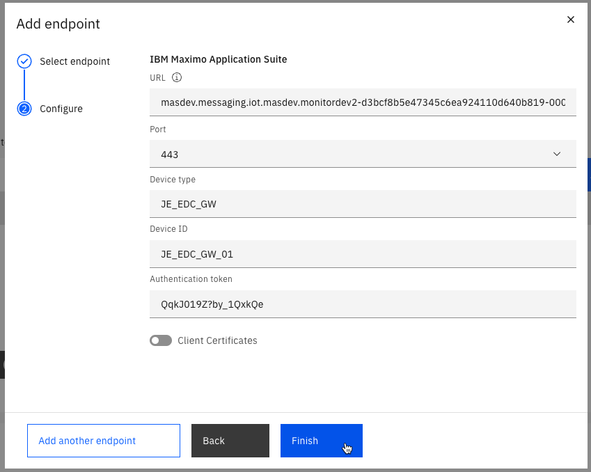
Tip
The URL is defined by <MAS tenant id>.messaging.iot.<MAS domain>
Add devices
EDC provides a vast library of pre-configured connectors for a range of industrial devices.
It is time to add the Lenze i550 devices. Click on Add device;
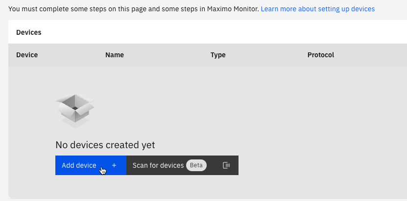
Search for Lenze in the manufacurer drop-down and select it: 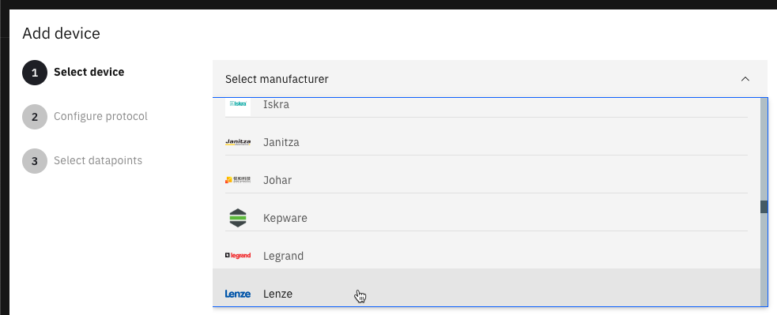
Select the i550 product and click Next:
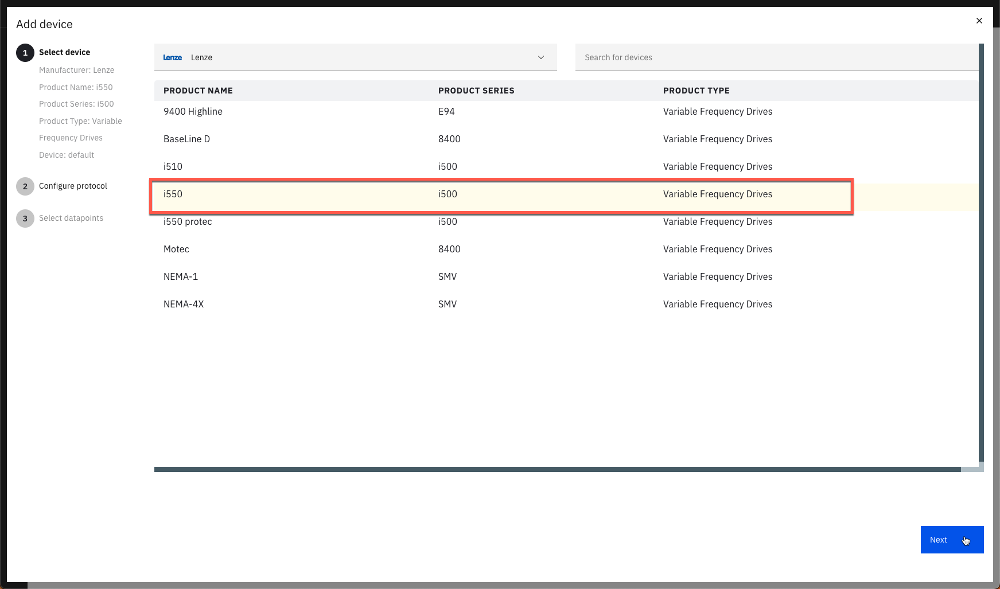
Give the device a name. This will become the Device ID in Monitor. Select Modbus TCP. Enter the IP Address where the Modbus simulator is running including the port number after the colon:
Select the eight first tags. Change the Base Frequency to 60000 ms (1 minute), which will change all the Frequency fields of the selected tags. Click Finish:
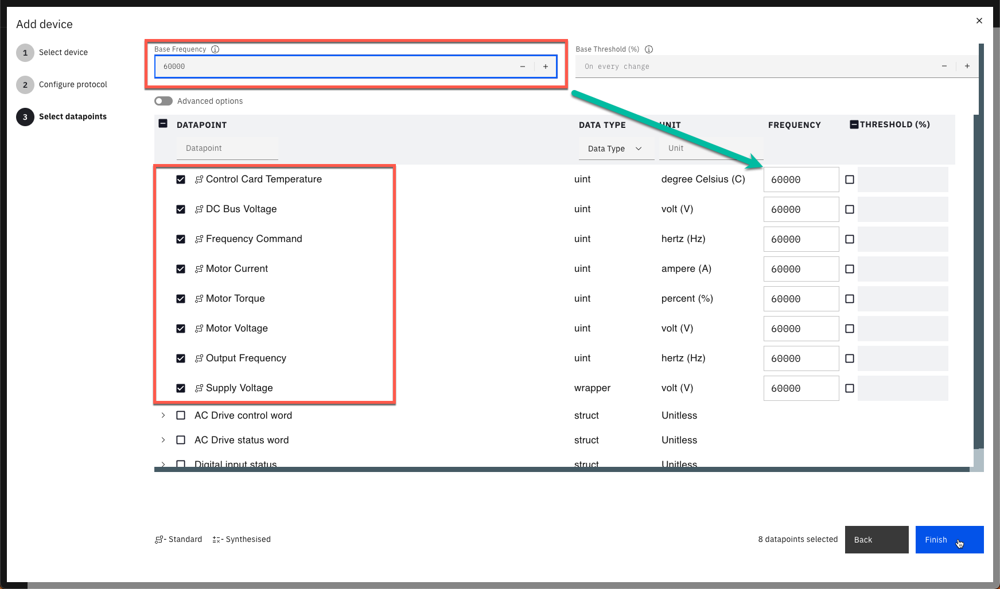
Tip
Standardized metrics use labels, units, and values that are unified to the standard Edge Data Collector device type. Synthesized metrics are created by using other metrics. Some standardized metrics are synthesized, but the metrics are listed as only standardized metrics.
Once the first Lenze device is created it is easy to duplicate it for the second one: 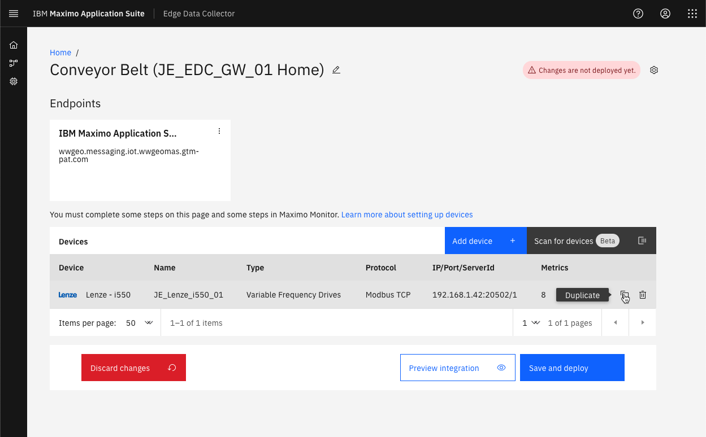
Enter the Device name and the IP address with port number of the other simulator. Click Next:
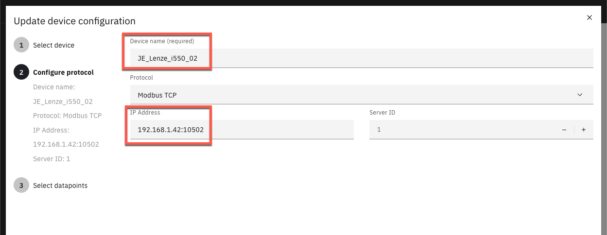
The data point settings are cloned automatically. Click Finish.
A red box in the upper right corner indicates that the changes you have made to the integrationn have not yet been deployed. Click on Save and deploy:
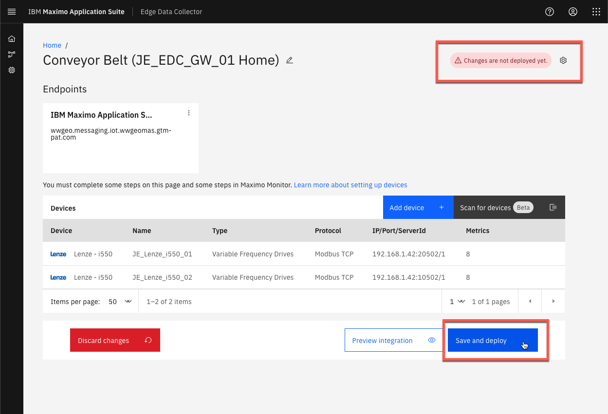
The Deployment guide appears: 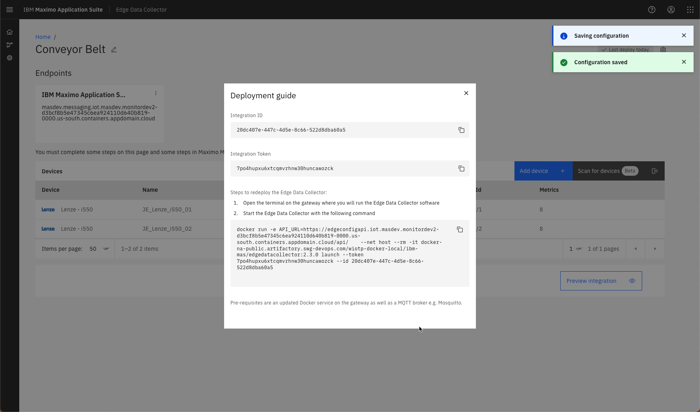
Congratulations you have successfully created an Edge Data Collector Integration.